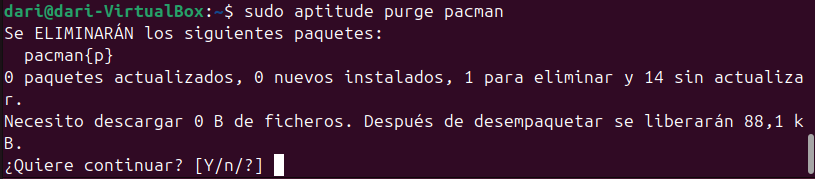
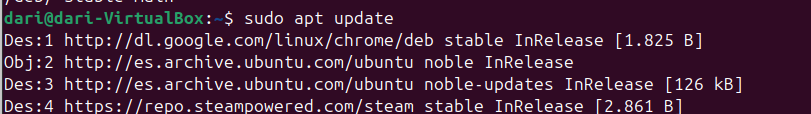
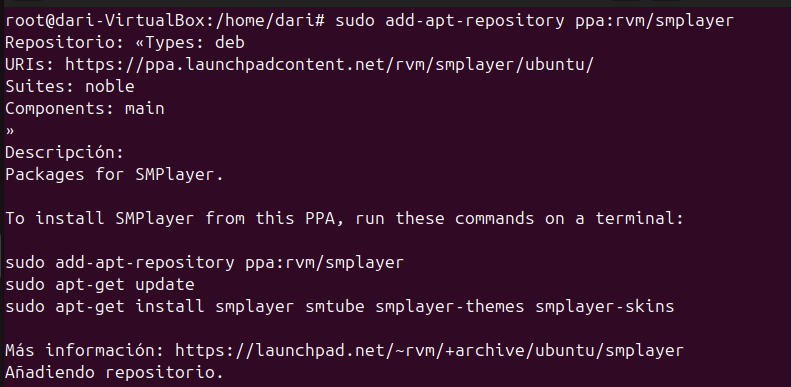
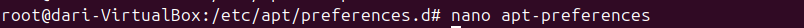
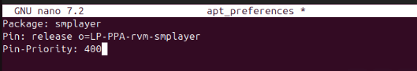
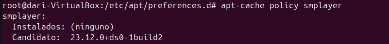
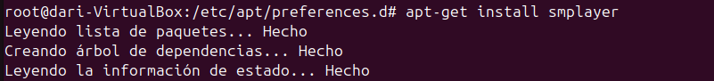

Instalación de programas
En este apartado instalaremos aplicaciones en Ubuntu usando diferentes formas.
Entorno Gráfico
Actualmente, Ubuntu ofrece la instalación de programas mediante su App Center. ES tan fácil como buscar la aplicación y descargarla mediante clicks.

Apt Install
Apt install es parte del conjunto de comandos de APT (Advanced Package Tool), que es el sistema de gestión de paquetes predeterminado en Ubuntu y Debian. Este comando se usa para instalar paquetes de software desde los repositorios oficiales o desde otras fuentes configuradas.
Funcionamiento de apt install: Instalación de paquetes: Cuando ejecutas sudo apt install nombre_paquete, APT se conecta a los repositorios configurados, descarga el paquete, junto con las dependencias necesarias, y lo instala en el sistema.

Ahora después de instalarlo, en la misma consola escribo "pacman" para comprobar que se ha instalado correctamente y puedo jugar.

Ahora voy a borrarlo.


Aptitude
Aptitude es otra herramienta de gestión de paquetes en Debian y Ubuntu que ofrece más funcionalidades que apt. Es más avanzado y ofrece tanto una interfaz de texto interactiva como un conjunto de comandos de línea similar a apt.
Funcionamiento de aptitude: Interfaz gráfica en la terminal: Puedes lanzar una interfaz interactiva en la terminal donde puedes navegar, buscar, instalar, eliminar o actualizar paquetes con un sistema de menús.



DPKG
Dpkg se utiliza principalmente para instalar, eliminar y gestionar paquetes .deb de manera directa.
Conceptos básicos sobre dpkg: Paquetes .deb: Los paquetes que dpkg maneja tienen la extensión .deb, que es el formato estándar de los paquetes de software en sistemas basados en Debian, como Ubuntu.
Instalación manual: A diferencia de apt, que se encarga de descargar los paquetes y resolver las dependencias automáticamente, dpkg se usa principalmente para instalar paquetes locales que ya has descargado en tu equipo.


Añadir repositorios
Añadir repositorios en Ubuntu permite acceder a software que no está en los repositorios oficiales, como versiones más recientes o programas propietarios (por ejemplo, Google Chrome o controladores de hardware). También facilita actualizaciones automáticas. Los repositorios son fuentes seguras y verificadas que permiten instalar y actualizar software de forma sencilla.
Se utiliza el comando wget para descargar la clave de firma GPG de Google y guardarla en el directorio de claves del sistema (/usr/share/keyrings/google.gpg). Esta clave es necesaria para verificar la autenticidad de los paquetes descargados desde el repositorio de Google.

Se añade el repositorio de Google Chrome al sistema mediante echo y sudo tee. Esto crea un archivo de configuración en /etc/apt/sources.list.d/google-chrome.list que permite a apt obtener paquetes desde el repositorio de Google Chrome, asegurándose de que se usen las firmas GPG descargadas previamente.

Se ejecuta sudo apt update para actualizar la lista de paquetes disponibles, ahora incluyendo el repositorio de Google Chrome añadido. Esto permite que el sistema reconozca y acceda a las versiones más recientes de los paquetes de Google Chrome. 
Pinning Packet
El pinning de paquetes en sistemas Debian/Ubuntu te permite decidir de qué repositorio quieres instalar un paquete y qué versión prefieres. Esto es útil si necesitas una versión específica y no quieres que se actualice automáticamente desde otros repositorios. Básicamente, es una forma de tener más control sobre qué software y actualizaciones instalas en tu sistema.
Muestra la ejecución del comando apt-cache policy smplayer, que permite ver la versión disponible y la instalada de SMPlayer en el sistema. No hay ninguna versión instalada, y la candidata es la 23.12.0.

Se está añadiendo un repositorio PPA (Personal Package Archive) con sudo add-apt-repository ppa:rvm/smplayer. Esto es útil para instalar versiones más recientes de SMPlayer que no están disponibles en los repositorios oficiales de Ubuntu. 
Muestra el uso de nano para editar un archivo de preferencias de apt con nano apt-preferences, que permitirá ajustar la prioridad de las versiones de SMPlayer. 
Se muestra la edición del archivo apt_preferences en el cual se establece la prioridad del paquete smplayer desde el repositorio PPA con una prioridad de 400. Esto indica que se le está dando preferencia a este repositorio para evitar la instalación automática desde otras fuentes. 
Luego de ajustar las preferencias, se verifica de nuevo la versión disponible con apt-cache policy smplayer, y la versión candidata vuelve a ser la 23.12.0, lo que sugiere que la prioridad establecida podría estar afectando la selección del paquete. 
Se intenta instalar SMPlayer con apt-get install smplayer. Esto iniciará el proceso de instalación, utilizando la versión disponible según la prioridad configurada previamente. 
Finalmente, se revisa de nuevo el estado del paquete smplayer con apt-cache policy smplayer, mostrando que la versión instalada es la 23.12.0, que es la misma que la candidata.Finalmente, se revisa de nuevo el estado del paquete smplayer con apt-cache policy smplayer, mostrando que la versión instalada es la 23.12.0, que es la misma que la candidata.